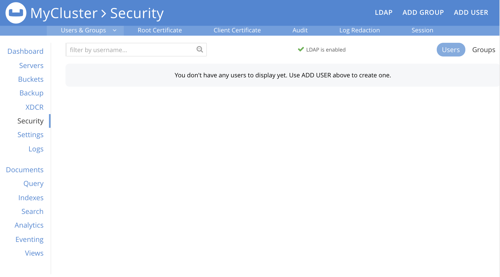
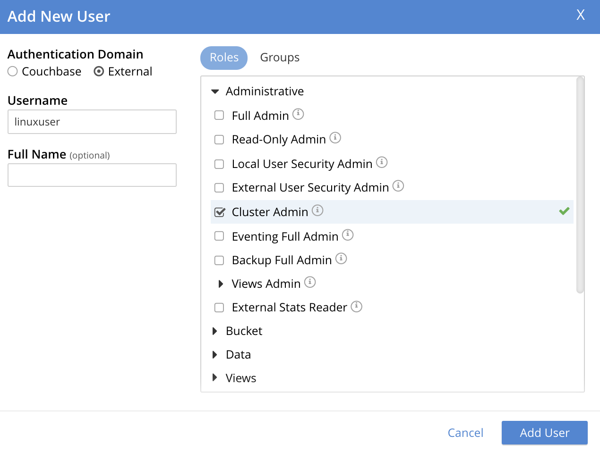
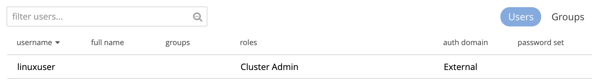
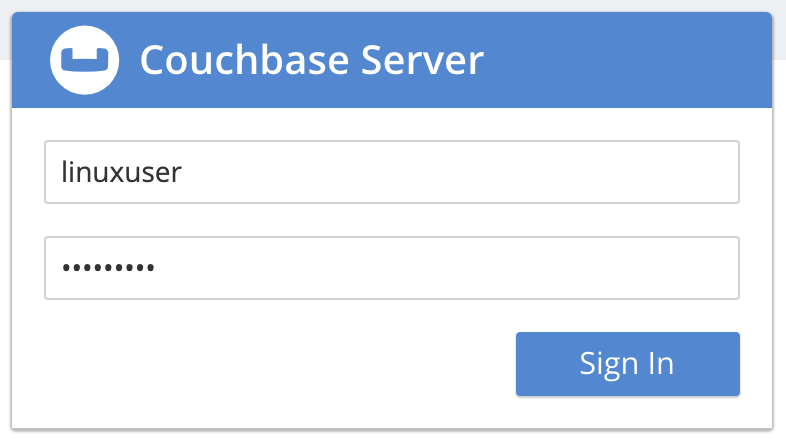

Configure PAM
Pluggable Authentication Modules (PAM) provide an authentication framework that allows multiple, low-level authentication schemes to be used by a single API. The Enterprise Edition of Couchbase Server, running on Linux, supports administrator-authentication through PAM’s Linux password-module.
PAM Features
Used with the Enterprise Edition of Couchbase Server, the PAM Linux password-module provides:
-
External authentication: Administrator-accounts defined on Linux systems, in the
/etc/shadowdirectory, can be accessed for authentication-purposes by Couchbase Server. -
Password policy-management: Linux password-management can be used across different Couchbase Server-nodes; to synchronize, maintain, and expire administrator-passwords.
Version Requirements
Use of the PAM Linux password-module requires all cluster-nodes to be Linux-based, running the Enterprise Edition of Couchbase Server, version 4.6 or above.
Additionally, the saslauthd library version must be 2.1.x or above.
Set Up Linux-Password Authentication
The following sequence shows how the PAM Linux password-module can be used to validate usernames and passwords, when administrators log into Couchbase Server.
Supervisor access, via sudo, is required to perform most of the steps; and an editor is required, to allow you to edit configuration files.
Note that for PAM to be fully configured, the following procedure must be performed on each node in the cluster.
Proceed as follows:
-
Bring up a terminal, and install the
saslauthdlibrary for your Linux distribution:-
CentOS/RHEL
yum install cyrus-sasl -
Ubuntu/Debian
apt-get install sasl2-bin
-
-
Ensure that the Couchbase Cluster is running. Then, enable external authentication on the cluster, using the Couchbase CLI
setting-ldapcommand: specifying server IP-address and port number, username, and password:/opt/couchbase/couchbase-cli setting-ldap \ -c 10.144.210.101 -u Administrator -p password \ --authentication-enabled 1Note that
--authentication-enabled 1enables external authentication, and--authentication-enabled 0disables. See setting-ldap for further information. When successfully executed, the command provides the following notification:SUCCESS: saslauthd settings modified. -
Add the
couchbaseuser to thesaslgroup, to allow access tosaslauthd:usermod -aG sasl couchbase -
In the
saslauthdconfiguration file, verify thatsaslauthdis set up to use PAM, by using thegrepcommand, and examining the output, using one of the following procedures:-
CentOS/RHEL
grep "MECH" /etc/sysconfig/saslauthd MECH=pamIf output to the above command does not confirm that
MECHis set topam, bring up the configuration file/etc/default/saslauthdin an editor, and manually set theMECHparameter topam. -
Ubuntu/Debian
grep 'MECHANISMS' /etc/default/saslauthd MECHANISMS="pam"If output to the above command does not confirm that
MECHANISMSis set topam, bring up the configuration file/etc/default/saslauthdin an editor, and manually set theMECHANISMSparameter topam.
-
-
If you are running Centos 7.x or 8.x, or are running RHEL 8.x, add the following lines to the file
/etc/pam.d/passwd:auth include system-auth account include system-auth
-
Set up PAM to authenticate the Couchbase service, by copying
/etc/pam.d/passwdto/etc/pam.d/couchbase.cp /etc/pam.d/passwd /etc/pam.d/couchbase -
Create a Linux user on the current system, and give them a password. For example, use the username
linuxuser(this user is the administrator who will be authenticated by PAM). Enter the following commands, to create the user and to commence definition of their password, respectively:useradd linuxuser passwd linuxuserThe
passwdcommand returns the promptEnter new UNIX password:. Duly enter and then verify your chosen password. -
Access Couchbase Web Console (if on the same node, at
localhost:8091), and log in. Then, access the Security tab, on the upper, horizontal control-bar. This brings up the Security view: -
Left-click on the ADD USER button, situated near the right. This brings up the Add New User dialog. Select the External radio-button, in the Authentication Domain panel at the upper left. Then, enter the name of the new user you are creating. (Note that at this point, if Native LDAP has also been configured for the cluster, the notification
not foundappears above the username-field: however, this can be ignored.) Next, specify a suitable role, such as Cluster Admin.The panel now appears as follows:
Then, left-click on Add User. The newly defined user now appears in the Security view.
 -
In the terminal, restart the SASL service, to allow PAM authentication to take effect.
$ service saslauthd restartWhen this command is successful, the output confirms that the daemon has been started. If the command fails, bring up the file
/etc/default/saslauthdin an editor, and locate the line that contains theSTARTvariable. If this line readsSTART=no, change it toSTART=yes. Then, save the file, exit, and rerun the command. -
Restart the Couchbase-Server service, to allow external authentication through PAM to take effect.
$ service couchbase-server restart -
In the browser, on the same node, access
localhost:8091. When the Couchbase Web Console login-interface appears, enter the username and password you previously created:Left-click on the Sign In button. The user you created is now logged into Couchbase Server, as an administrator.
Troubleshooting
If login does not succeed, bring up the file /etc/default/saslauthd in an editor, and ensure it contains the line START=yes.
If the line reads START=no, change it to START=yes.
Also confirm that the MECH (for CentOS/RHEL) or MECHANISM (for Ubuntu/Debian) parameter is set to pam.
Save the file, and exit.
Then, restart both saslauthd and couchbase-server, as described above.
Finally, re-attempt login.